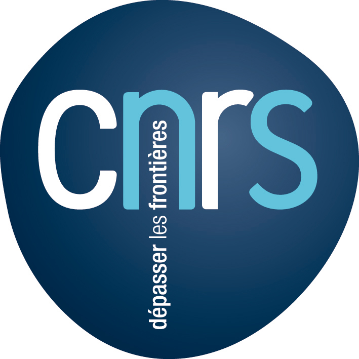
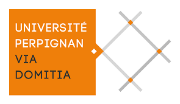
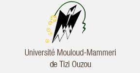

Master2 3IR|3ir2019.slack.com
| Sbarina HAMANI | célibataire |
| Adresse: 20 Avenue marguerite, 95120 ERMONT | Permis B |
| Tel 0664 620 478 | |
| sabrina.hamani@outlook.fr |
| 2019 | Master2 Ingénierie et innovation réseaux et images, université Paris 13 |
| 2018 | Master1 Electronique, Energie electrique, Automatique parcours: Automatique et systèmes embarqués pour la géstion des energies, université Via Domitia Perpignan |
| 2016 | formation programmeur, Ecole expréssion |
| 2015 | Master2 Atomatique commande des systèmes, TIZI OUZOU |
| 2013 | licence en Automatique, TIZI OUZOU |
| 2010 | baccalauréat sciences expérimentale |
| 2018 (1 mois) | La Modélisation et la simulation d'un méthaniseur |
| 2015 (7 mois) | la simulation du problème de Stefan en utilisant la méthode d'immobilisation de la frotière |
| languages | c/c++, VHDL, Matlab, Electric, HTML, JAVA, SQL, JAVA EE, CSS fisto fluidsim, microcontrôleur, Siemens (step 7), Modélisation, Identification, Simulation et Régulation des systèmes sous Matlab/Simulation. |
| langues | Français, Anglais, Kabyle, Arabe |
| outils bureatiques | word, exel, PowerPoint, access, Latex |
| Sport | tennis, basketbal |
| culture | lecture, cinéma, Music |
| loisirs | Randonée, Broderie |